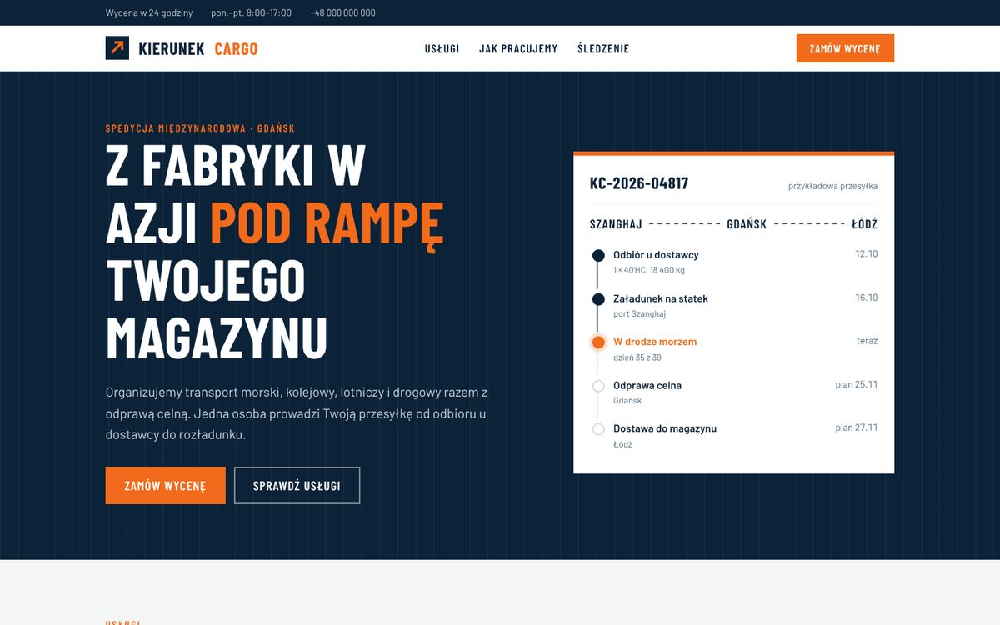

Strony internetowe dla firm
Strony, które szybko się ładują i jasno mówią, co oferujesz
Projektuję i wykonuję landing page, strony wizytówki i strony firmowe. Piszę je w czystym HTML, CSS i JavaScript, bez WordPressa i ciężkich wtyczek, dlatego działają na każdym hostingu.
- 5 projektów poniżej
- telefon, tablet, komputer
- HTML · CSS · JavaScript
Landing page · aplikacja mobilna
Wpadaj
- Zadanie
- Przedstawić ideę aplikacji do spontanicznych spotkań i zebrać zapisy na listę oczekujących.
- Rozwiązanie
- Makieta telefonu zbudowana w CSS zamiast zrzutów ekranu, funkcje w układzie kafelkowym, FAQ i formularz zapisu.
Otwórz stronę →
Landing page · usługi dla gastronomii
Liczydło
- Zadanie
- Pokazać ofertę analityka danych w ciemnym stylu premium i wyjaśnić proces od danych do decyzji.
- Rozwiązanie
- Przykładowe raporty narysowane jako wykresy SVG, sekcja case study i formularz kontaktowy.
Otwórz stronę →
Strona oferty · rośliny i donice
Zielony Kąt
- Zadanie
- Pokazać ofertę w trzech grupach i zbierać zapytania zamiast sprzedaży przez koszyk.
- Rozwiązanie
- Spokojny układ z dużą ilością przestrzeni, własne ilustracje SVG i formularz z możliwością dołączenia zdjęcia wnętrza.
Otwórz stronę →
kierunek-cargo

Strona firmowa · spedycja
Kierunek Cargo
- Zadanie
- Przedstawić usługi transportowe i ułatwić wysłanie zapytania o wycenę.
- Rozwiązanie
- Tabela usług z orientacyjnym czasem tranzytu, demonstracyjne śledzenie przesyłki i rozbudowany formularz wyceny.
Otwórz stronę →
Strona firmowa · remonty
Poziomica
- Zadanie
- Pokazać zakres usług i dać klientowi orientacyjną cenę jeszcze przed kontaktem.
- Rozwiązanie
- Kalkulator kosztów działający w przeglądarce, harmonogram remontu łazienki dzień po dniu i formularz zgłoszenia.
Otwórz stronę →
Wszystkie projekty powyżej to prace koncepcyjne, przygotowane na podstawie typowych zapytań klientów. Marki, dane i liczby są fikcyjne, a formularze działają w trybie demonstracyjnym.